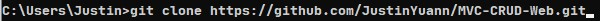
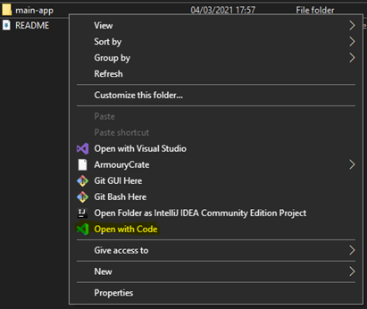
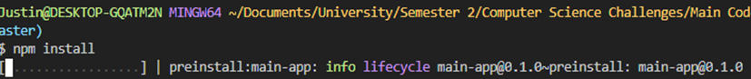
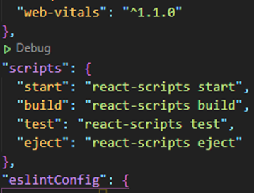
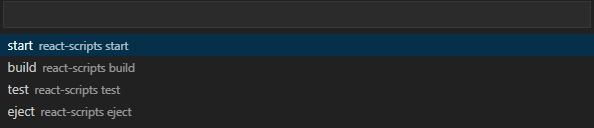
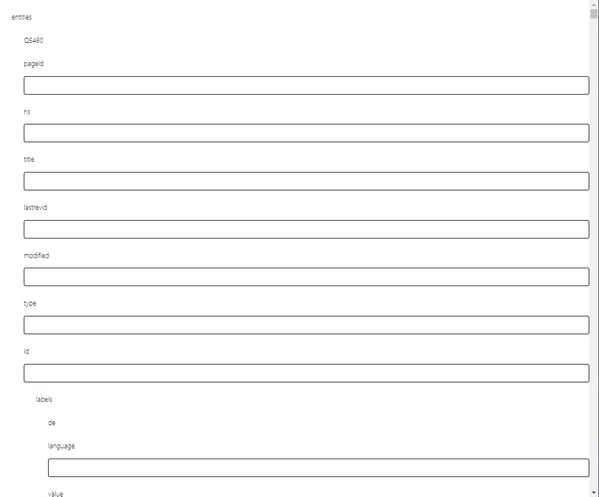
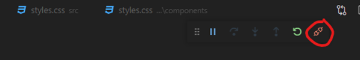

My Current Work
In this section, I’ll be talking about how to import my current code from my GitHub but also how to run it. The backend uses Node.js so there’s quite a few CMD/Bash commands that need to be done.
Link to My Repository for this Project
What to be Installed
Node.js
Node.js Download LinkThe link above will take you to a page to download Node.js for Windows 10. You want to select the option that states “LTS” which stands for Long Term Support. This means that the version will be supported and maintained by Node.js projects for an extended period.
Node.js is the back-end JavaScript runtime environment. For this project, it will be the Controller in the MVC. Node.js will be communicating with MongoDB and sending/receiving the data from React.
Installation Steps
- Continue to click next until you hit the window with the heading “Tools for Native Modules”
- In my experience, just check the tickbox, to ensure that NPM can be used correctly.
- Continue to click next and allow Node.js through the firewall.
Here is an installation video that I used to install VSCode during my development
Node.js Video TutorialVSCode
VSCode Download LinkThe link above will take you to page to download VSCode for Windows 10. VSCode will be your text editor to edit JavaScript files. I’ve chosen VSCode due to the extensions that make web development easier.
Installation Steps
- Continue to click next until you hit the window with the heading “Select Additional Tasks”
- I would have all boxes ticked, this is for a better experience with coding especially with the “Open with code”. This will be activated when you right click a JavaScript file
- The rest is pretty simple and you now have VSCode installed
Web Development Extensions
These extensions are valuable on ensuring that your code is well formatted and aids you with development. Below is a video that I followed that made me learning the basics of JavaScript much easier since it forces less known coding conventions.
VSCode Extension TutorialGit
Git Download LinkThe link above will take you to a page to download Git for Windows 10. It will appear in a “monitor with a teal background”.
Git is a piece of software for tracking changes in a set of files. For this project I used GitHub, but you could GitLab if that’s what you’re more familiar with. This isn’t a necessary set-up to start the project but I believe it’s good to keep a repository of any big projects you do like this one. Also, using Git allows you see to copy my code easier.
Installation Steps
- Click “Next” until you hit the window that “Adjusting your PATH environment”.
- Ensure that check the box “Git from the command line and also from 3rd-party software.
Here is an installation video for the Git Windows 10 and some tests to ensure that it was installed correctly.
Git Installation VideowGet the Code Running
This section is what commands must be run in order to successfully copy and run the code
Importing the Code
Open a CMD inside a folder that you want the project to be stored in. An easy way to do this is:
- Go inside the chosen folder that you want the project to be in, inside the file explorer
- Select the address bar and erase everything, leaving it blank
- Type in “CMD” and press Enter
The above should then open a CMD where you can run the command seen below:-
Result
Your chosen folder will now be containing a folder called “WebAutomationResearch”. Inside will contain 3 folders, we will be focusing on the folder called “main-app”.
Running the Code
- Please right click the folder called “main-app” and choose the option “Open with Code”. 
- Open the terminal section of VSCode and run the command “npm install”. 
- Once inside VSCode, select the file “package.json” and press the “green arrow” above the code section called “scripts” 
- Choose “start” from the top of the Search once you have clicked the “green arrow”. 
- Finally, VSCode will open your default browser and then the project is now running! 
Stop the Code
In the section, it will be about how to stop the code from running. It’s simple. Just click the disconnect in VSCode. You can see it below.
Conclusion
By the end of this section, you should now be able to copy, run and stop the current project work. Also, you should now have a suitable environment to start to further develop the project! Continue to try to refine you’re on set-up of VSCode.